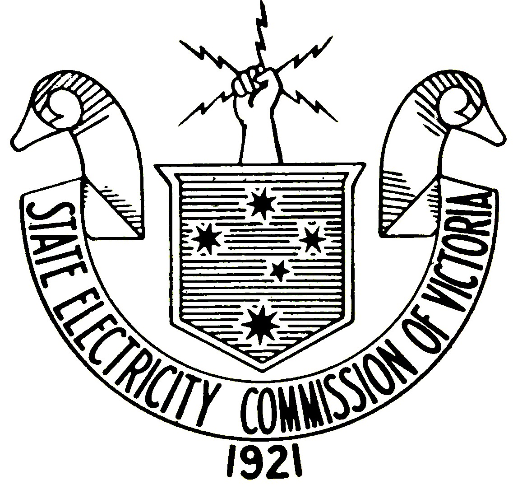
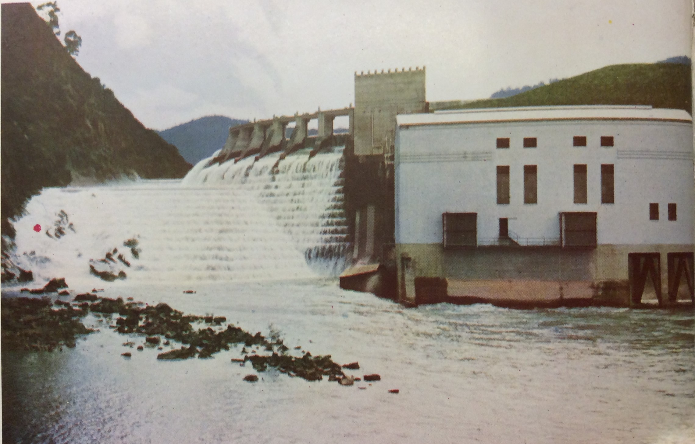

The development of electricity distribution in Victoria before the great war was unregulated and not yet standardised. Consumers relied on the different local power stations to supply their electricity, as large-scale transmission over the lines was deemed impractical for small-scale private enterprise. As a consequence of this it’s reported that “throughout the suburbs, electrical current phases were different. Electric fittings which would operate in Melbourne would not operate in Richmond, and fittings which operated in Richmond would not operate in Essendon. There was no area of the size of Melbourne whose electrical business was in such a chaotic and confused condition.”1
This overall halted electrical and motorised development in Victoria, prompting the government to establish a commission to change the system for the benefit of Victorian businesses and households. The state at this point had been relying on New South Wales (NSW) to provide Victoria with black coal, for which it was spending 31s ($137 in 2017) per ton, and which was double the price at which NSW was paying for its own coal23. A major strike in NSW in 1907 epitomised “that Victorian industries, Victorian railway [...] and Victorians’ home comfort are practically at the mercy of the New South Wales colliers,” despite the state’s having “vast deposits of brown coal, which could be easily handled and cheaply mined.”4 The prospect of being self-sufficient hence became very important for the State Government.
After Sir John Monash’s service in the war, the Victorian Government tasked him with the infiltration and intelligence collection of several brown coal mining sites throughout Germany in 19192. With his fluency in the language and engineering knowledge, he submitted a report to the state outlining the potential for brown coal to be used as a resource for power generation, and the necessary infrastructure required for such an undertaking.
After Monash submitted this report, the Victorian State Electricity Commission (SEC) submitted its own, outlining the project's viability and impact it would have on the state. Apart from Monash, the project also received praise from Charles H Merz, an electrical engineer who had himself recommended the development of the UK National Grid5. The SEC resoned that “by the provision of adequate machinery, any increase in output above the proposed initial capacity can be produced [... it is] a storehouse of wealth and power which any state must deem if not only a good fortune to possess but a duty to develop for the use of the community.” All three advisory parties agreed that for this operation to succeed, it would be necessary that control of power "be vested in a single authority."
“The commission would take every lawful means to protect the consumers of electricity against the danger of being overcharged for electric service [...] The commission was created primarily to assist the industrial development of the State, and the commission was resolved to ensure that supplies of industrial power should reach the consumer, wherever situated, at the lowest possible cost.”6
The Victorian government in 1919 established the SEC to overlook the development of electricity supply in Victoria. In late 1920, Sir John Monash was appointed the head of the commission due to his engineering knowledge, political activity and prior involvement in the project7. The State Electricity Commission set out to establish a grid which would provide a uniform, reliable, and affordable electricity supply to every home in Victoria. In 1921, new legislation was passed granting the Commission powers to act out its state-wide project.2
This vision consisted of a new major power plant being built in the Morwell region. A new township named Yallourn was built. Its name a portmanteau of the Woiwurrung8 words Yalin (then anglicised as Yalleen), meaning brown; and Lourn, meaning fire or charcoal. The town would be the site of open-cut brown coal mines, which would provide coal to be briquetted9 in the town, burned in Morwell and Newport, then supplied to Victoria. This system, both closed and scalable, would be “capable of satisfying all possible requirements of the state for many generations to come.”10 The SEC also planned a hydroelectric dam on the Goulburn river, and the Kiewa Hydroelectric Scheme which - in tandem with the Yallourn site - would help provide power to the rest of Victoria.
The Sugarloaf power station was the main station in the Sugarloaf-Rubicon hydroelectric project. It would later be dwarfed by the Kiewa Hydroelectric Scheme.
Unlike its predecessor supply lines, this new system would be a fully connected grid, allowing several generators to be connected to a statewide network. The infrastructure was built to deal with peak demand by having its Newport generator act only when necessary, otherwise relying solely on the Morwell and Sugarloaf stations11. By 1929, the grid had connected Victoria from Lakes Entrance to Port Fairy, to the NSW towns of Corowa, Albury and Moama. Scalability would further allow this far-reaching network to become the National Electricity Market Grid.
Monash’s role in the SEC entailed managing difficult public relations; the commission was certainly not without its critics. In 1922, Monash came under fire for overextending the authority of the SEC by the Melbourne City Council (MCC) and the Electric Control Defence Committee6. This was in response to the SEC’s buying generators and tramway companies within the Melbourne metropolitan region. A select committee was established to inquire the responsibility and legitimacy of the SEC‘s buying private generators throughout the region. The MCC “contended that the commission had no justification for entering the field of retail electric supply in opposition of the City of Melbourne,” and asserted that the SEC had overstepped its authority1.
The inquiry eventually turned in Monash's favour due to his knowledge of the authority of the SEC in law, and his ability to reproduce any relevant documentation supporting that. Such confidence and organisation won over the public and the committee7. More interestingly though, Monash put emphasis on the large sums of profit made by the MCC from its reatailing power to its constituents. By framing it as inappropriate behaviour for the council, Monash prioritised the needs of the consumer over the rights of service provider. Through this focus, he shifted the perception of electricity from being a marketable resource to an essential service, necessary for the modernisation of the Victorian household.
Monash also sustained pressure from the public when the commission required six German engineers to come to Victoria to help establish the briquetting plant in Yallourn. His response came in a detailed statement conceding that “while no one desires a permanent influx into the Commonwealth of former enemy aliens” its was vital that the engineers provide Australia with their expert knowledge12. Aside from the public pressure, the Federal Government itself blocked the engineers from arriving in Australia “claiming as its authority an amendment to the Immigration Act.”13
The engineers did arrive and work in Australia for 12 months14, though clearly not without issue. Despite himself being of German heritage, Monash never addressed - or rather could not address - these attitudes from a humanitarian or personal perspective, rather a technical perspective. Despite himself having fought the Germans first hand however, he nonetheless did most openly welcome and employ the expertise of the German engineers; not for any reason other than that it was the only way for Victoria to get cheap reliable power.
This short episode in the story of the development of the Victorian grid reveals some of John Monash’s attitudes toward immigration and Australianism. For him, Australian patriotism and international collaboration were not mutually exclusive. This went against the cultural psyche which saw Australia as its own closed nation with ties only to England. Monash however would not let this get in the way of producing the highest quality coal briquettes possible. He made it very clear to the public that ensuring prosperity in Australia meant opening up to the outside world, and that foreign involvement was more important than national purism.
“It is high time that the public of Australia should realise that the growth of its native industries depends far more upon the acquisition from abroad of expert and scientific knowledge and experience than upon tariffs. Australia could never have established ironworks, or spinning or weaving, or many other industries if it had had to depend on such knowledge as was available in Australia.” - From John Monash’s public statement, 1922
It is clear that Monash found Australia’s insular nature regressive and acting against its own interests, and was disappointed in his Government and his people for refusing the entry of professionals on the basis of “mere sentimental and temporary objection.” It is unclear whether Monash’s played a role in his actions and beliefs (click to find out more), and whether he took anti-German attitudes personally to any extent.
What is clear is that despite the criticisms and scale of the project, the SEC's grid was a great success for the Victorian people. The SEC's grid changed the way the state looked at power, not only in scale but as a resource. People from all over the state could now enjoy in the benefits of cheap, reliable and regulated power. The grid however also embodies Australia's opening up to the world, itself built on the engineering of the former enemy, Germany. For the majority of Victorians this fact didn't matter, as by 1929, Victorians from Melbourne to Albury were relying on this German system to turn the lights on.